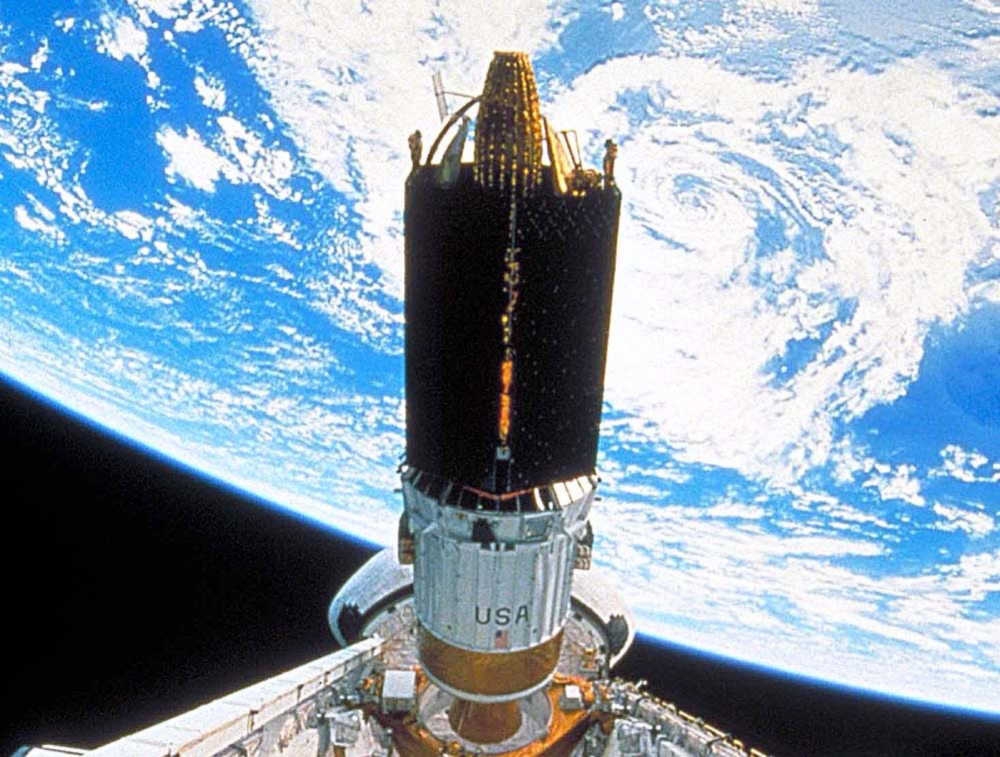
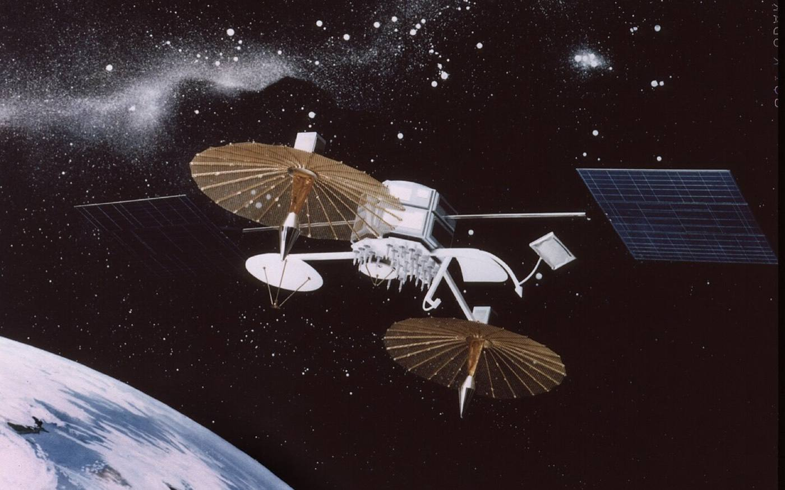

What are satellites?
A satellite is a machine that people build, launch on a rocket, and leave circling the Earth. No wings, no pilot — just clever engineering, power from the Sun, and radio to talk to the ground.

🛰️ A satellite in orbitA machine that keeps falling… and never lands
Here's the clever bit. If you throw a ball, it curves down and hits the ground. Throw it harder and it travels farther before landing. Now imagine throwing it SO fast — about 27,600 kilometres per hour — that by the time it falls, the Earth has curved away underneath it.
It never lands. It just keeps falling around and around the planet. That endless, perfect fall is called an orbit.
Try this: spin a ball on a long string in a circle. The string pulls it inward so it never flies away. For a satellite, gravity is the invisible string.
A moon… or a machine?
The word "satellite" means anything that travels around something bigger. There are two kinds: the natural ones nature made (like the Moon) and the human-made ones we build and launch. This website is all about the machines!
Natural satellites
They were already there — nobody built them.
- ✓The Moon, travelling around Earth
- ✓Hundreds more around Jupiter, Saturn and other planets
- ✓Born with the planets, made of rock and ice
- ✓Usually enormous — you could never build one!
Human-made satellites
Designed by engineers, launched by rockets — the stars of this site.
- ✓Made in factories, then blasted into orbit
- ✓Carry cameras, antennas, computers and solar panels
- ✓Do jobs: telecom, TV, internet, maps, defence, science
- ✓Over 12,800 of them circle Earth right now
Remember: when someone says "a satellite", they almost always mean the human-made kind — a machine in orbit. Send a text, watch a live match, pay by card, or check the weather, and a machine like this helped make it happen.
What's inside a satellite?
Tap or hover the glowing dots to peek inside a real satellite. Each part has a very important job.

Tip: on a phone, just tap a dot. ✨
The jobs human-made satellites do
Flip each card to meet a different kind of machine — the ones that carry your phone calls and TV, guide ships, guard countries, watch the weather and explore deep space.
They photograph clouds, oceans and storms from above. That's how we know a hurricane is coming days before it arrives — plenty of time to stay safe.
These satellites call out the time and their position. Your phone listens to several at once and does clever maths to show the little blue dot — your exact spot on Earth!
Phone calls, texts, live video and internet all travel up to a satellite and back down. That's how a ship in the ocean, a plane over a desert or a village with no cables still gets online — and huge new "constellations" like Starlink beam fast internet everywhere on Earth.
One big broadcast satellite can send the very same TV channel or radio show to millions of homes at once — right across a whole continent, with no cables and no towers needed.
Countries use their own satellites to keep watch over borders, spot danger such as a rocket launch very early, and keep soldiers, ships and planes in touch. Grown-ups call these reconnaissance and early-warning satellites.
Up in space there's no air to blur the view. Telescopes like Hubble and James Webb take the clearest pictures ever of distant stars and galaxies.
They keep an eye on forests, melting ice, farms, animal habitats and pollution. Scientists and farmers use the pictures to look after our beautiful planet.
They listen for emergency beacons from ships and planes in trouble, spot forest fires within minutes, and help rescuers find people lost at sea or in the mountains.
The International Space Station is the biggest human-made satellite of all — a floating home and laboratory where astronauts live, sleep, exercise and run science experiments every single day.
How high do they fly?
Satellites don't all fly at the same height. The height decides how fast they go and what job they're best at.
- ↓Low Earth Orbit (160–2,000 km): zooming fast, one lap every ~90 minutes. The ISS, most Earth-observers and the new internet constellations live here.
- •Medium Earth Orbit (~20,000 km): the sweet spot for GPS navigation satellites and some defence systems.
- ↑Geostationary (35,786 km): so high that one lap takes exactly 24 hours — it seems to hang still in the sky. Perfect for TV broadcast, weather and big telecom satellites.
643 × your plane ride: a passenger jet flies about 10 km up. Geostationary satellites are nearly 3,600 times higher than that!
The life of a satellite
Build it
Engineers design and carefully assemble thousands of tiny parts in a super-clean room.
Launch it
A rocket carries it up through the atmosphere and releases it into space.
Work it
For years it circles the Earth, collecting information and beaming it home.
Retire it
When it's tired, it's steered to burn up safely or parked in a far-away "graveyard orbit".
Now you know how they fly.
Want to know who started it all?
Let's travel back to 1957 and meet the very first satellite ever launched.